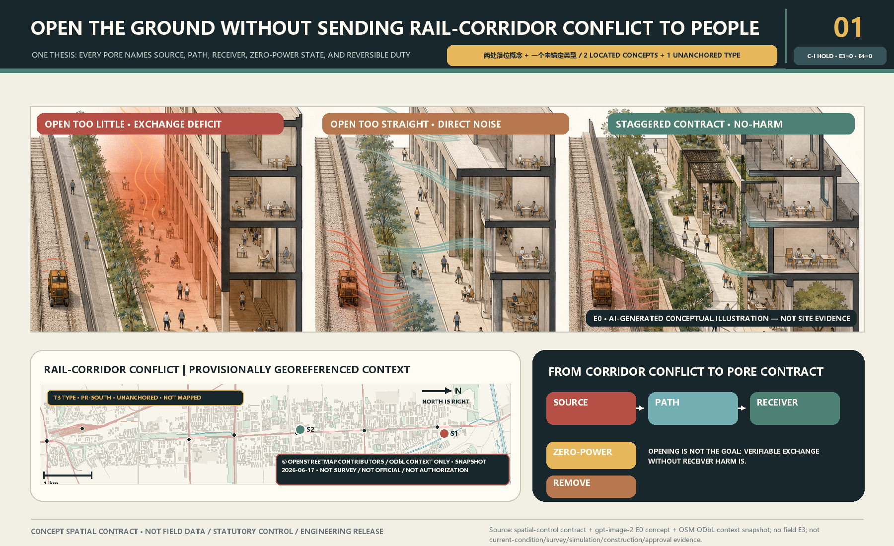
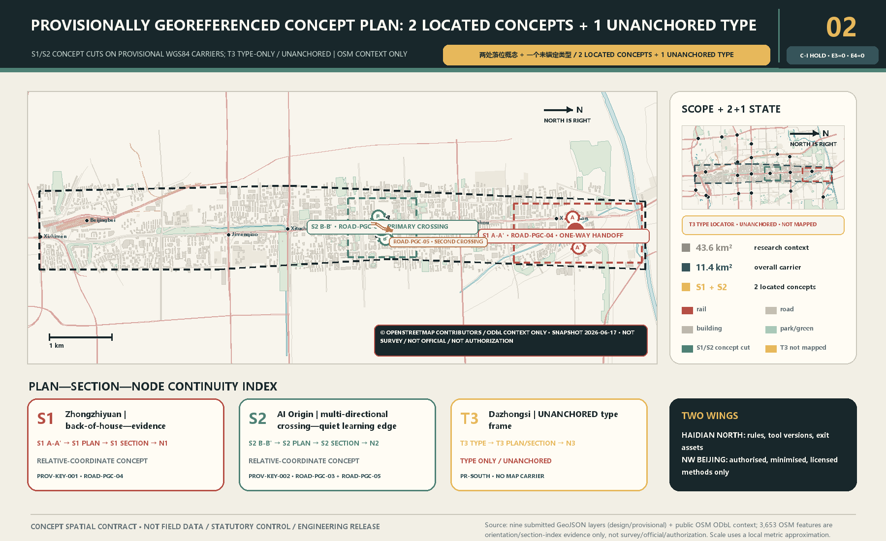
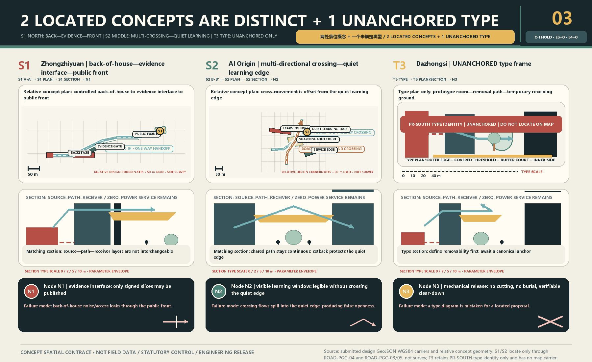
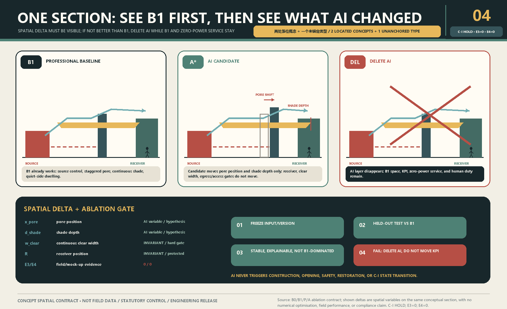
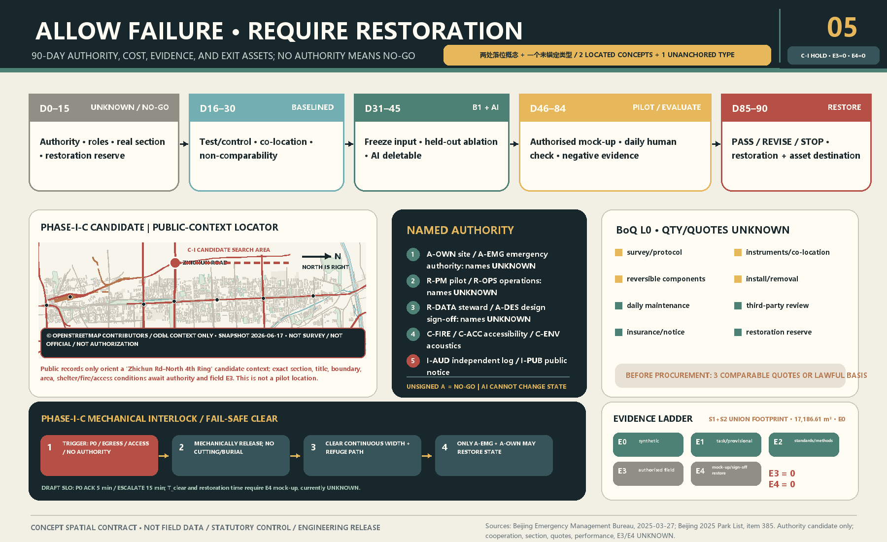

one-north + LaunchPad
Transfer scenario admission and talent-service interfaces, not campus form.
Not another environmental sensing line: every ground-floor pore must improve air-heat exchange, block direct noise, and preserve a shaded path and quiet side at zero power.
This page is a presentation layer; proposal.md, GeoJSON, metrics, and matrices remain authoritative. Geometry is rough/provisional. Real sections, sources, title, fire, accessibility, environmental, acoustic, operating, and quote evidence remain UNKNOWN until authorised.
Offset pores, shaded interfaces, and quiet-side buffers form a spatial contract—not environmental equipment. The generated base image is E0 explanation only; geometry and performance cannot be inferred from pixels.

A public OSM snapshot supplies context only; submitted provisional carriers add the S1/S2 concept cuts and the T3 unanchored type index. OSM is not survey, official mapping, or authorization.

Zhongzhiyuan layers back-of-house—evidence interface—public front; AI Origin offsets multi-directional crossing from a quiet learning edge; Dazhongsi stays an UNANCHORED type frame with no invented portal, location, or capacity.

B1 and the AI candidate share one section; pore shift and shade-depth deltas are explicit, while receiver, continuous clear width, egress, and access gates stay fixed. Deleting AI leaves B1 intact.

Ninety days begins at UNKNOWN, then named RACI, baseline, B1/AI ablation, authorised reversible mock-up, and paired evaluation before PASS, REVISE, or STOP. The Phase-I-C interlock releases components, clears the path, and requires named verification before restoration; SLO and BoQ remain contract drafts. E3/E4=0.

Six cases transfer auditable mechanisms, not landmark imagery; eight elements connect through spatial carriers, named duties, and exit gates.
Transfer scenario admission and talent-service interfaces, not campus form.
Bind compute/data access to the evidence gate of research space.
Use back-of-house—evidence interface—public front layering.
Cluster shared facilities around industry while exposing living/mobility loads.
Make restoration, community interface, and auditable exit preconditions.
Lock land obligations, reuse, and exit conditions into the development contract.
carrier
canonical anchor + restore dutysource—path—receiver
clear width + refuge + accessproduction interface
named operator + conflict reviewreversible capital
BoQ + reserve + stop-losspublic front
access rule + duty rostercontrolled back
quota + fail-safe shutdownevidence interface
schema + lineage + release signature90-day pilot
baseline + exit + restorationValues below come from submitted rough/provisional GeoJSON for package consistency only—not official boundaries, planning controls, or environmental performance.
Board 02 shows the S1/S2 concept cuts, T3 unanchored type index, and two wings; the boundary is a dashed evidence layer.
The 43.6 km² research context and 11.4 km² overall carrier are provisional context only; S1/S2 are located, while T3 has no mapped area.
Zhongzhiyuan S1 and AI Origin S2 are the two located concepts; Dazhongsi T3 is the one unanchored type.
Submitted land use is conceptual topology, never regulatory or existing-condition evidence.
A continuous accessible shaded walk remains at zero power.
Shade trees, courts, planters, and quiet sides form the passive layer.
Buildings show interface, pore, offset, and buffer relations only; massing and ownership await data.
The only near-term candidate is an authorised reversible section mock-up; no authority means NO-GO.
AI compares design candidates and deviations only; it never approves works, opening, safety, or recovery.
Only package-consistency geometry values appear; environmental performance remains UNKNOWN.
Five boards cover thesis, scales, 2 located concepts + 1 unanchored type, B1/AI, and authority-cost-evidence-restoration.
Current package_state=ready_for_review; exact-head status is recorded only in manifest.json and self_check.json. Machine PASS would not mean design quality or implementation.
Submitted GeoJSON/metrics, official task, spatial-control contract, and registered E0 generated image.
Official geometry, real section, sources, authority, instruments, quotes, and performance remain pending.
This page is a presentation layer; proposal.md, GeoJSON, metrics, and matrices remain authoritative. Geometry is rough/provisional. Real sections, sources, title, fire, accessibility, environmental, acoustic, operating, and quote evidence remain UNKNOWN until authorised.